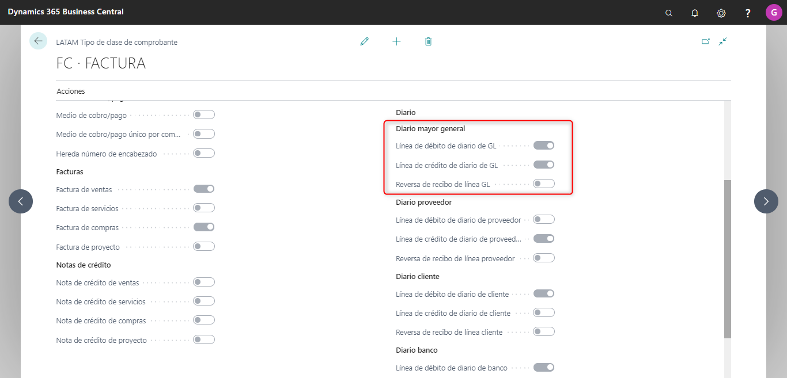
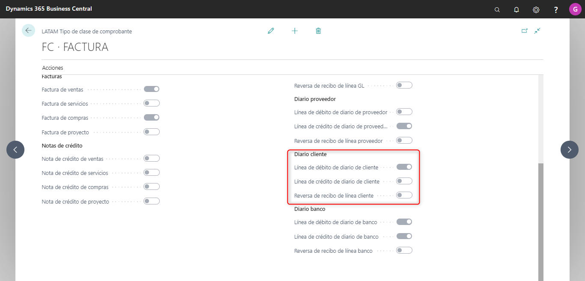

Tipo Clase Comprobante
Objetivo
Este formulario permitirá dar de alta los diferentes tipos de clase de comprobantes con los que puede trabajar la compañía, que servirán de agrupadores de las clases de comprobantes.
Aquí no solamente se darán de alta los tipos de comprobantes tales como Factura, Nota de crédito, Nota de débito, sino también tipos de comprobantes que representen Medios de Cobro/Pago, como, por ejemplo: Cheque, Transferencia, Efectivo y Comprobantes de tesorería como Recibos, Orden de Pago, Depósitos. etc.
Para realizar la correspondiente configuración se deberá ingresar al formulario ubicado en LATAM → COMPROBANTE → TIPO DE CLASE DE COMPROBANTE.
Solapa General
Para modificar el N° de Tipo clase de comprobante existente, acceder al Navegador del menú de acciones donde al seleccionar completa los datos disponibles.

Los campos a completar son:
-
N°: este campo se completará manualmente, identificando con un código al comprobante que se esté dando de alta.
-
Descripción: este campo se completará manualmente, ampliando con un detalle el código de comprobante que se esté dando de alta.
-
Prefijo: en este campo se deberá poder configurar el prefijo con el que se requiere identificar al tipo de comprobante en el número de documento que se ingresará en las transacciones de los diferentes módulos de BC. Este campo puede quedar vacío ya que existen comprobantes que no requieren identificarse con un prefijo.
La cantidad máxima permitida para el campo Prefijo se validará con lo configurado en el maestro de Configuración General LATAM en el campo Long. prefijo tipo clase comprobante.
-
Documento único por comprobante: Esta configuración permitirá controlar, al momento de cargar un Diario, que sólo se permita seleccionar ese tipo de comprobante una sola vez en un mismo asiento. Esto asegurará por ejemplo que no se pueda cargar más de un comprobante de Recibo u Orden de Pago en un mismo Diario.
-
Cuenta única por comprobante: esta configuración permite controlar, al momento de cargar un Diario, que solo se permita seleccionar comprobantes cuya cuenta asociada al Tipo de línea sea la misma. Es decir, en un mismo asiento no podrá haber, por ejemplo, dos líneas del Tipo Proveedor, con el mismo ID de Comprobante, cuya cuenta no sea la misma.
En el área de trabajo del tipo de clase de comprobantes, se encuentran diferentes paneles a configurar:

Los paneles a completar son:
-
Medio de cobro/pago: al seleccionar este campo, el tipo de comprobante configurado se encontrará disponible para realizar transacciones de tesorería (Pagos y Cobros). Al tildar esta opción, se deshabilitarán el resto de las casillas de verificación.

-
Factura: en este grupo de campos se encontrarán disponibles para seleccionar las siguientes opciones:
-
Factura de venta: Comprobante a ser utilizado en Orden de Venta.
-
Factura de servicio: Comprobantes a ser utilizado en Factura de servicio.
-
Factura de compra: Comprobante a ser utilizado en Orden de Compra.
-
Factura de proyecto: Comprobante a ser utilizado en el módulo de proyecto.
Estos campos podrán ser seleccionados en forma simultánea y permitirán que el tipo de comprobante configurado se encuentre disponible para ser seleccionado en los formularios Factura de servicio, Orden de Venta y Orden de Compra.
Al tildar alguna de estas opciones (o ambas) se deshabilitarán el resto de las casillas de verificación, excepto la opción Diario.
Si se tilda la opción Diario, este tipo de comprobante también se encontrará disponible para ser seleccionado en las transacciones de Diario.
-

-
Nota de crédito: en este grupo de campos se encontrarán disponibles para seleccionar las siguientes opciones:
-
Nota de crédito de venta: Comprobante a ser utilizado en Orden de Venta.
-
Nota de crédito de servicio: Comprobante a ser utilizado en Factura de Servicio.
-
Nota de crédito de compra: Comprobante a ser utilizado en Orden de Compra.
-
Nota de crédito de proyecto: Comprobante a ser utilizado en el módulo de proyecto.
Estos campos podrán ser seleccionados en forma simultánea y permitirán que el tipo de comprobante configurado se encuentre disponible para realizar transacciones utilizando los tipos de comprobante Nota de crédito de venta, Nota de crédito de servicio y Nota de crédito de compra.
Al tildar alguna de estas opciones (o ambas) se deshabilitarán el resto de las casillas de verificación, excepto la opción Diario.
Si se tilda la opción Diario, este tipo de comprobante también se encontrará disponible para ser seleccionado en las transacciones de Diario.

-
-
Remito: en este grupo de campos se encontrarán disponibles para seleccionar las siguientes opciones:
-
Remito: al seleccionar este campo, el tipo de comprobante configurado se encontrará disponible para realizar remitos en orden de venta y en orden de compra. Al tildar esta opción, se deshabilitarán el resto de las casillas de verificación, excepto la opción Diario.
Si se tilda la opción Diario, este tipo de comprobante también se encontrará disponible para ser seleccionado en las transacciones de Diario de los módulos de BC.
-
Remito de devolución: al seleccionar este campo, el tipo de comprobante configurado se encontrará disponible para realizar remitos por nota de crédito en Orden de venta y en Orden de compra.
-
Remito de Transferencia: al seleccionar este campo, el tipo de comprobante configurado se encontrará disponible para realizar remitos en Pedidos de Transferencia entre almacenes.
-
Remito de proyecto: Comprobante a ser utilizado en el módulo de proyecto.
-
Remito de devolución de proyecto: Comprobante a ser utilizado en el módulo de proyecto.
-

Cuando se selecciona la opción Diario, el resto de las opciones se encontrarán disponibles para ser elegidas en este formulario, excepto la opción Medio de Cobro/Pago. Al seleccionar este campo de verificación, este tipo de comprobante se encontrará disponible en las transacciones de Diario de los módulos de BC.
Tal como se observa, la opción de Diario se encuentra subdividida entre Débito o Crédito para cada tipo de cuenta. Esta división ofrecerá la oportunidad de validar la selección de ciertos comprobantes, a partir de la configuración del Tipo de cuenta y Saldo de la Línea. La columna ‘Admite reversa’, permite habilitar la reversión de transacciones con comprobantes asignados para las líneas seleccionadas.
- Diario mayor general: En líneas de Tipo Contabilidad (DEBITO o CREDITO): deberá habilitar los comprobantes que coincidan con el Tipo de cuenta y Saldo cargado en la transacción. Este último caso asumiendo que, previa carga del comprobante se ha rellenado el monto en débito o crédito. De lo contrario se dejará en blanco, hasta tanto se complete el campo del importe.

-
Diario proveedor: En Líneas del Tipo Proveedor (DEBITO o CREDITO): en los diarios se mostrarán los comprobantes habilitados para dicho proveedor o cliente, cuyo Tipo de cuenta se encuentre habilitada para el saldo cargado. Este último caso asumiendo que, previa carga del comprobante se ha rellenado el monto en débito o crédito. De lo contrario quedará en blanco, hasta tanto se complete el campo del importe.
En caso de que el usuario cambie de débito a crédito o viceversa, si el comprobante NO se encuentra habilitado para trabajar en dicho tipo de saldo se borrará al igual que todos sus datos adicionales.

-
Diario cliente: En Líneas del Tipo Cliente (DEBITO o CREDITO): en los diarios se mostrarán los comprobantes habilitados para dicho proveedor o cliente, cuyo Tipo de cuenta se encuentre habilitada para el saldo cargado. Este último caso asumiendo que, previa carga del comprobante se ha rellenado el monto en débito o crédito. De lo contrario quedará en blanco, hasta tanto se complete el campo del importe.
En caso de que el usuario cambie de débito a crédito o viceversa, si el comprobante NO se encuentra habilitado para trabajar en dicho tipo de saldo se borrará al igual que todos sus datos adicionales.

-
Diario banco: En Líneas del Tipo Banco (DEBITO o CREDITO): se habilitarán los comprobantes que coincidan con el Tipo de cuenta y Saldo cargado en la transacción. Este último caso asumiendo que, previa carga del comprobante se ha rellenado el monto en débito o crédito. De lo contrario se dejará en blanco, hasta tanto se complete el campo del importe.

NOTA: estas nuevas validaciones no alcanzan a los comprobantes cuyo Tipo posea el Tilde ‘Medios de Cobro Pago’
Aplicativo de impuesto
Posicionado en el área de trabajo del N° de tipo que se desea actualizar, seleccionar el Boton Acciones → Aplicatico de impuestos.


Este formulario se utilizará para configurar todos los códigos necesarios para la importación en los diferentes soportes magnéticos y confección de informes Impositivos, relacionados con el tipo de clase de comprobante.
Los campos a completar son los siguientes:
-
Aplicativo: este campo desplegable permite seleccionar uno de los códigos de soportes magnéticos dados de alta en el maestro de Aplicativos.
-
Descripción: este campo ampliará la información del Id. de aplicativo. No podrá ser editado manualmente.
-
Código de aplicativo: en este campo se deberá ingresar manualmente el código asignado al comprobante en el soporte magnético seleccionado.